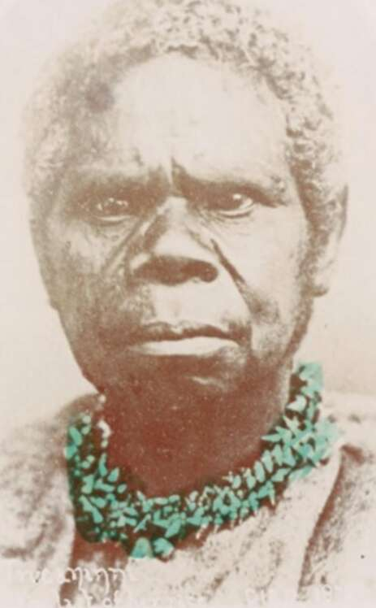

the Roman Empire — the only important premodern European empire — derived most of its wealth from its North African, Balkan and Middle Eastern provinces. Rome’s western European provinces were a poor Wild West, which contributed little aside from minerals and slaves. Northern Europe was so desolate and barbarous that it wasn’t even worth conquering. 35. Truganini, the last native Tasmanian. Only at the end of the fifteenth century did Europe become a hothouse of important military, political, economic and cultural developments. Between 1500 and 1750, western Europe gained momentum and became master of the ‘Outer World’, meaning the two American continents and the oceans. Yet even then Europe was no match for the great powers of Asia. Europeans managed to conquer America and gain supremacy at sea
